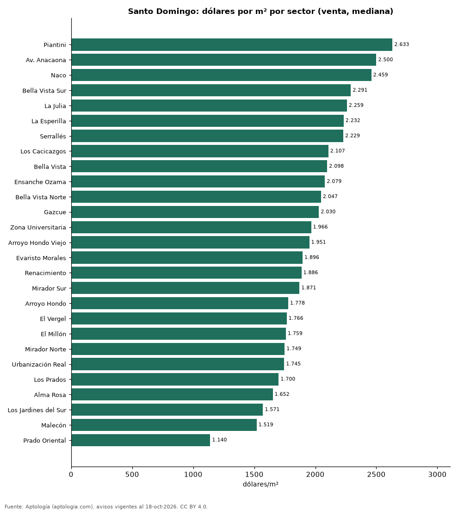

Precio de la vivienda por sector en Santo Domingo: venta y arriendo en 27 sectores (octubre 2026)
Estudio con datos abiertos (CC BY 4.0). Versión original: https://github.com/elbroker/aptologia-datos/tree/main/estudios/precio-vivienda-santo-domingo-por-sector-2026 · DOI: 10.5281/zenodo.23460804
El sector con el metro cuadrado más caro de Santo Domingo es Piantini, con USD 2.633 en la mediana de apartamentos en venta; el más barato de la muestra es Prado Oriental, con USD 1.140. En arriendo, el canon mediano más alto se pide en Av. Anacaona (USD 4.000 al mes) y el más bajo en El Vergel (USD 950).
Resumen: analizamos 6.814 avisos de apartamentos en 27 sectores de Santo Domingo con 30 avisos o más.
Actualizado: 18 de octubre de 2026 (datos del 18 de octubre de 2026) · Próxima actualización: mensual.

Resumen
| Indicador | Valor |
|---|---|
| Más caro (venta por m²) | Piantini: USD 2.633 |
| Más barato (venta por m²) | Prado Oriental: USD 1.140 |
| Santo Domingo (venta por m², mediana) | USD 1.975 |
| Arriendo más alto | Av. Anacaona: USD 4.000 |
| Sectores | 27 |
Sectores de Santo Domingo
| Sector | Venta: dólares por m² | Arriendo: dólares al mes | Avisos (venta / arriendo) |
|---|---|---|---|
| Piantini | 2.633 | 1.600 | 587 / 583 |
| Av. Anacaona | 2.500 | 4.000 | 67 / 37 |
| Naco | 2.459 | 1.400 | 817 / 394 |
| Bella Vista Sur | 2.291 | 1.500 | 98 / 90 |
| La Julia | 2.259 | 1.200 | 72 / 32 |
| La Esperilla | 2.232 | 1.600 | 220 / 73 |
| Serrallés | 2.229 | 1.200 | 86 / 54 |
| Los Cacicazgos | 2.107 | 1.550 | 112 / 59 |
| Bella Vista | 2.098 | 1.400 | 400 / 317 |
| Ensanche Ozama | 2.079 | — | 89 / s. d. |
| Bella Vista Norte | 2.047 | — | 47 / s. d. |
| Gazcue | 2.030 | 1.000 | 111 / 85 |
| Zona Universitaria | 1.966 | — | 50 / s. d. |
| Arroyo Hondo Viejo | 1.951 | 1.262 | 62 / 36 |
| Evaristo Morales | 1.896 | 1.150 | 348 / 192 |
| Renacimiento | 1.886 | 1.200 | 309 / 96 |
| Mirador Sur | 1.871 | 1.300 | 87 / 53 |
| Arroyo Hondo | 1.778 | 1.298 | 136 / 39 |
| El Vergel | 1.766 | 950 | 36 / 37 |
| El Millón | 1.759 | 1.100 | 234 / 86 |
| Mirador Norte | 1.749 | 1.050 | 100 / 39 |
| Urbanización Real | 1.745 | 1.300 | 51 / 33 |
| Los Prados | 1.700 | — | 65 / s. d. |
| Alma Rosa | 1.652 | — | 108 / s. d. |
| Los Jardines del Sur | 1.571 | — | 41 / s. d. |
| Malecón | 1.519 | 2.000 | 61 / 38 |
| Prado Oriental | 1.140 | — | 47 / s. d. |
Medianas de apartamentos; — indica menos de 30 avisos. El canon es el mensual sin gastos comunes, condominio ni administración.
Preguntas frecuentes
¿Cuál es el sector más caro de Santo Domingo? Piantini, con USD 2.633 por m² en apartamentos en venta (octubre de 2026).
¿Dónde es más barato comprar apartamento en Santo Domingo? Entre los sectores con 30 avisos o más, en Prado Oriental: USD 1.140 por m².
¿Dónde es más caro arrendar en Santo Domingo? En Av. Anacaona, con un canon mediano de USD 4.000 al mes.
Metodología
- Fuente: exportes nocturnos de la base de datos de Aptología (aptologia.com) del 18 de octubre de 2026: avisos vigentes de vivienda en portales inmobiliarios de 13 países, recogidos por Aptología y vistos en línea entre el 11 y el 18 de octubre de 2026. Corte: 18 de octubre de 2026.
- Depuración: se eliminan duplicados exactos (misma ciudad, zona, tipo, precio, moneda, área, habitaciones y baños) y los precios fuera del percentil 1–99 de cada país, operación, moneda y tipo; el precio por m² usa solo avisos con área declarada entre 12 y 2.000 m² y también se recorta al P1–P99.
- Qué se mide: precios pedidos (publicados), no precios de cierre. En arriendo, el canon mensual sin administración, gastos comunes ni condominio.
- Muestra mínima: cada cifra publicada se apoya en al menos 30 avisos; las celdas con menos se omiten.
- Monedas: nunca se mezclan avisos de monedas distintas sin convertirlos. Conversión a dólares con la tasa de mercado de ExchangeRate-API (open.er-api.com, actualización del 18 Oct 2026): 1 USD = 3.182,80 COP, 1 USD = 18,47 M.N, 1 USD = 5,09 BRL, 1 USD = 3,44 PEN, 1 USD = 982,44 CLP, 1 USD = 1.514,57 ARS, 1 USD = 40,20 UYU, 1 USD = 5.705,37 PYG, 1 USD = 61,27 DOP, 1 USD = 0,89 EUR, 1 USD = 11,72 BOB; la UF chilena a 41.178,64 CLP (mindicador,cl. 18-oct-2026). Los avisos publicados en dólares se usan tal cual.
- Monedas: Venta en dólares y arriendo en dólares, la moneda en que se publica la mayoría de los avisos de cada operación; los avisos en otra moneda se excluyen. Las equivalencias en dólares entre paréntesis usan la tasa citada.
- Limitaciones: la cobertura depende de los portales que recorre Aptología en cada país y es mayor en las ciudades grandes y en los segmentos medio-alto y alto; el área es la que declara el aviso, sin verificar; los nombres de zona vienen de los portales.
- Privacidad: solo se publican agregados; no se publica ningún dato personal, enlace a avisos ni nombre de anunciante.
- Datos abiertos: datos.csv, licencia CC BY 4.0.
Cómo citar
Pinzón Pineda, D. M. (2026). Precio de la vivienda por sector en Santo Domingo: venta y arriendo en 27 sectores (octubre 2026). Aptología (aptologia.com). https://github.com/elbroker/aptologia-datos/tree/main/estudios/precio-vivienda-santo-domingo-por-sector-2026. Datos: datos.csv, licencia CC BY 4.0.